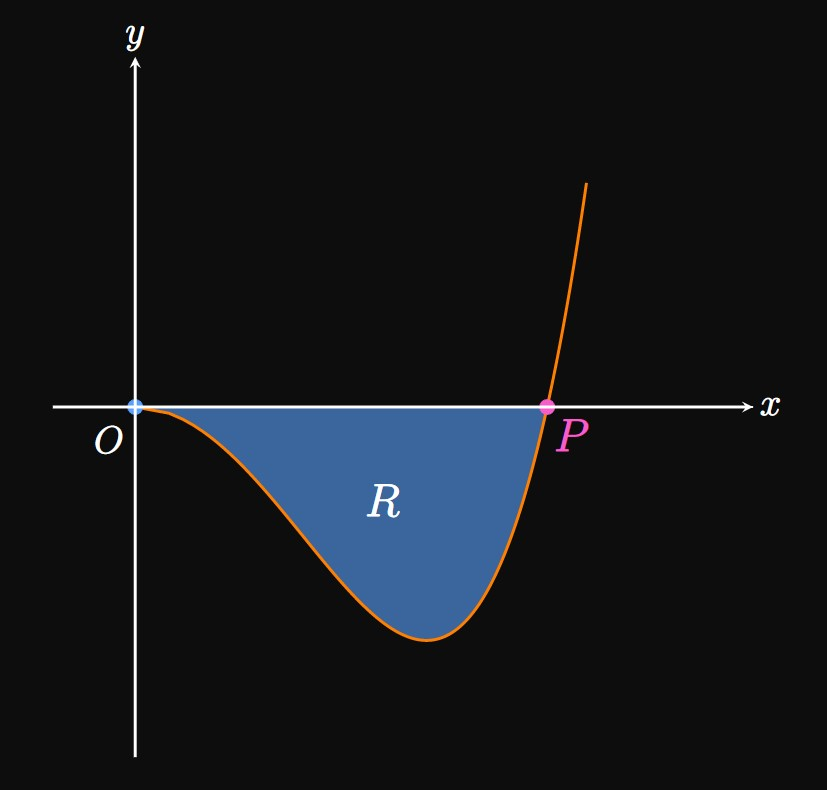
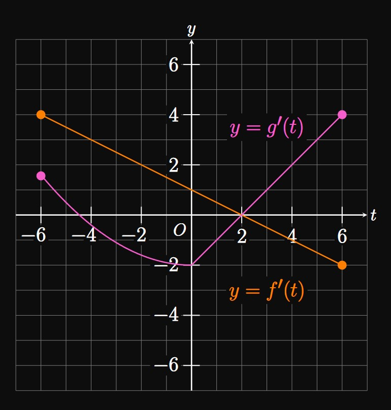
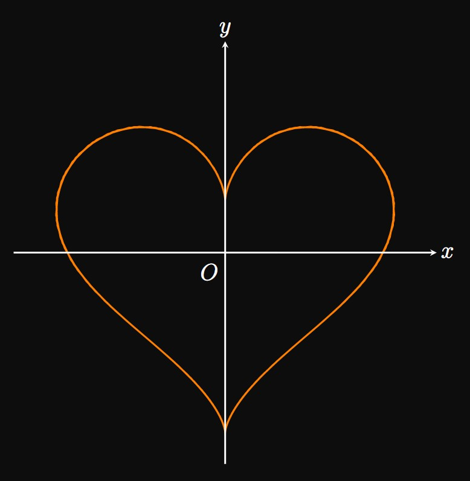

A curve is parameterized by
\[x = t^2 - 6t + 2 \lspace y = \tfrac{1}{3} t^3 - \tfrac{3}{2} t^2 - 5 \pd\]
Find all values of \(t\) such that the tangent to the graph has slope \(1.\)
Consider the parametric equations
\[x = 3t^2 + 2t + 5 \lspace y = -t^2 + 4t - 4 \pd\]
Find the values of \(t\) corresponding to the graph's
horizontal tangents and vertical tangents.
A curve is parameterized by the equations \(x = \sec t\)
and \(y = 2t\) for \(-\pi/2 \lt t \lt \pi/2.\)
Find the minimum value of \(x\) over this interval.
Let parametric equations of a graph satisfy \(\textderiv{x}{t} = 5\) and \(y = t^3 + 3t^2 - 4.\)
Find the values of \(t\) over which the graph is concave down.
Consider the family of graphs defined by the parametric functions
\(x = 2k \sin t\) and \(y = 1 - kt^2\) for any constant \(k.\)
Find all values of \(t\) such that the slope to the graph is equal to \(t.\)

A pond is found at the trough of a mountain, whose shape is modeled by a curve
parameterized by \(x = \sqrt t\) and \(y = t^2 - 4t\) for \(0 \leq t \leq 2\)
(Figure 5).
At what time \(t\) in \(0 \leq t \leq 1\) does the curve hit the origin \(O \ques\)
A region is enclosed by the \(y\)-axis and the curve parameterized by
\(x = 5 \sin t\) and \(y = 3t\) for \(0 \leq t \leq \pi.\)
There are several ways to represent this area.
Show that the area is given by the integral
\[15 \int_0^{\pi} \sin t \di t \pd \]
Eliminate the parameter to show that the area is also represented by the integral
\[5 \int_0^{3 \pi} \sin \frac{y}{3} \di y \pd \]
A curve parameterized by the equations \(x = 5t - 5t^3\) and \(y = 2\sqrt[3]{t} + 1\)
encloses a region \(R\) in the first quadrant.
Calculate the area of \(R.\)

A curve \(C\) is parameterized by the equations \(x = f(t)\) and \(x = g(t),\)
where \(f\) and \(g\) are differentiable functions.
The curve \(C\) passes through the point \((2, 0)\) when \(t = 1.\)
Figure 7 shows
the graphs of \(f'\) and \(g'\) for \(-6 \leq t \leq 6.\)
Determine the slope to the graph of \(C\) when \(t = 4.\)
What are the \(x\)- and \(y\)-coordinates of \(C\) when \(t = 5 \ques\)
Suppose that a parametric curve satisfies \(\textderiv{x}{t} = A\)
and \(\textderiv{y}{t} = t^n\) for constants \(A\) and \(n.\)
Calculate \(\textderiv{^4 y}{x^4}.\)
A curve parameterized by \(x = f(t)\) and \(y = g(t)\)
passes through the point \((1, 3)\) when \(t = 2\) and satisfies
\[\deriv{y}{x} = \frac{3t^2 - 6t + 2}{2t - 4} \pd\]
Find one possible set of identities for \(f\) and \(g.\)
Show that the unbounded region
in the first and fourth quadrants enclosed between the \(y\)-axis and the
curve with parameterization \(x = t \cos t\) and \(y = \ln t\) has area \(1.\)

A heart can be plotted by the parametric equations
\[
\ba
x &= 16 \sin^3 t \cma \nl
y &= 13 \cos(t) - 5 \cos(2t) - 2 \cos(3t) - \cos(4t) \pd
\ea
\]
(See Figure 8.)
The heart has \(x\)-intercepts of \(x = -15\) and \(x = 15.\)
Use a calculator to find the area enclosed by the heart.
(Hint: Use symmetry! Split the right half of the heart into three subregions.)